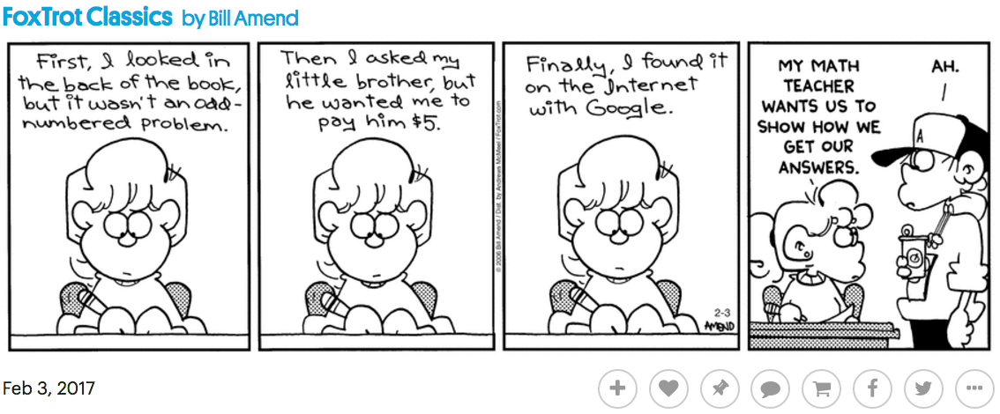

Hebrews 3:4
For every house is built by someone, but the builder of all things is God.
Assignments this week (click me!)
There are no required Apologia links to websites for the Student Notebook in Module 9.
Required Videos and Links:
Why can’t we feel Earth’s spin?: Because motion is relative
Read this quick article please:
http://earthsky.org/earth/why-cant-we-feel-earths-spin
Mythbusters tested the principle of inertia by launching a soccer ball of a moving car. By launching the soccer ball at the same speed the car was moving (50 mph), but in the opposite direction, the soccer ball drops to the ground.

Apollo 15 Proves Galileo Correct
Scalar and Vector Measurements - A simple tutorial answering: what are they? by NinetyEast
Speed and Velocity Simple Tutorial by NinetyEast
Optional but Helpful:
Scalars and Vectors by Bozeman Science
Speed, Velocity, and Acceleration by Bozeman Science
Very simple explanation: Speed vs velocity: the differences and similarities between speed and velocity by The Physics Professor (helpful if speed vs. velocity is still confusing)
Vocabulary Flashcards on Quizlet
Module 9 flash cards
